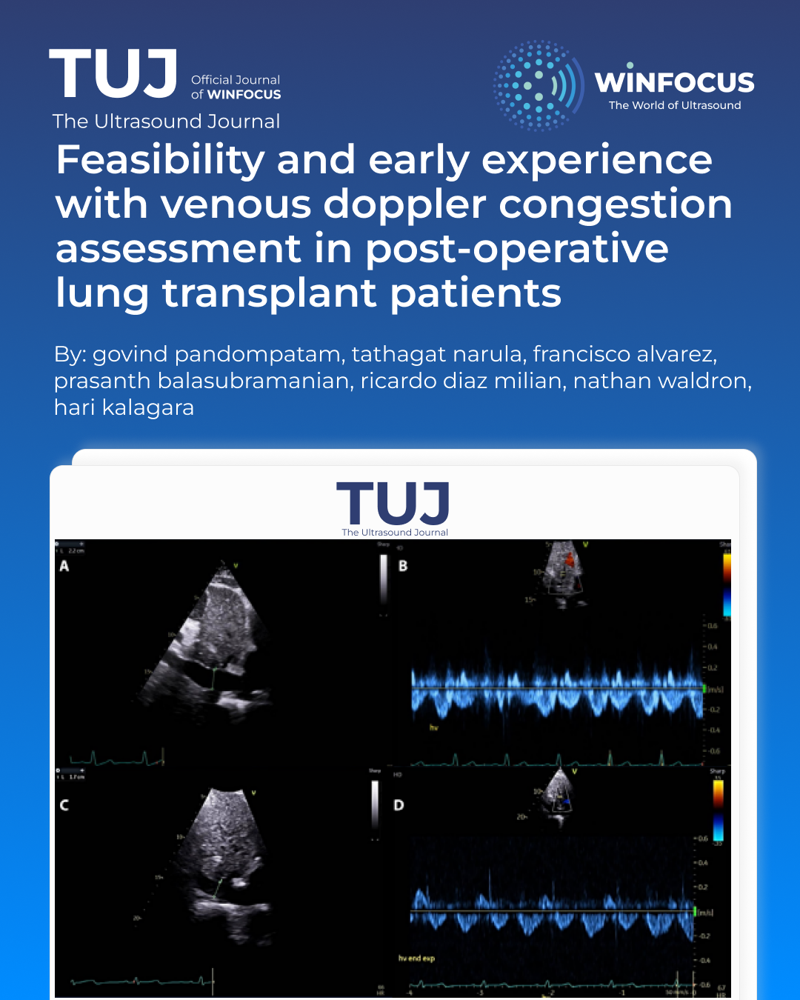

Feasibility and early experience with venous Doppler congestion assessment in post-operative lung transplant patients
Keywords:
Point of Care Ultrasound, VExUS, Lung Transplant, Critical care ultrasonography, Venous congestionAbstract
Background: The role of venous Doppler ultrasound in assessing venous congestion in the setting of post-lung transplantation surgery is unknown. We performed a feasibility study on the use of venous Doppler ultrasound in the immediate post-operative period after lung transplantation in a retrospective, single-center observational evaluation. Patients had at least two venous congestion Doppler ultrasound exams involving interrogation of IVC diameter, hepatic vein, portal vein and renal vein Doppler assessments.
Results: A total of 9 patients were included in our study with a median age of 60 years, 66.7% being male, and a median BMI of 20.9. All patients had VExUS grade ≥1 on their first venous Doppler exam. All nine patients had a decrease in portal vein pulsatility from initial to final exams. Correlation between portal venous pulsatility and net fluid balance was not statistically significant R= 0.33 (P= 0.39). Other parameters, including VExUS grade, IVC diameter, HV and RV Doppler changes from initial to final ultrasound exams showed variable changes in the post-operative period.
Conclusion: Venous congestion Doppler ultrasound assessments appear feasible in immediate postoperative lung transplant patients. A multitude of factors beyond fluid status likely affect waveforms.
References
1. Jeon K. Critical Care Management Following Lung Transplantation. J Chest Surg. Aug 5 2022;55(4):325-331. doi:10.5090/jcs.22.067
2. Pilcher DV, Scheinkestel CD, Snell GI, Davey-Quinn A, Bailey MJ, Williams TJ. High central venous pressure is associated with prolonged mechanical ventilation and increased mortality after lung transplantation. J Thorac Cardiovasc Surg. Apr 2005;129(4):912-8. doi:10.1016/j.jtcvs.2004.07.006
3. De Backer D, Aissaoui N, Cecconi M, et al. How can assessing hemodynamics help to assess volume status? Intensive Care Med. Oct 2022;48(10):1482-1494. doi:10.1007/s00134-022-06808-9
4. Humbert M, Kovacs G, Hoeper MM, et al. 2022 ESC/ERS Guidelines for the diagnosis and treatment of pulmonary hypertension. Eur Heart J. Oct 11 2022;43(38):3618-3731. doi:10.1093/eurheartj/ehac237
5. Beaubien-Souligny W, Rola P, Haycock K, et al. Quantifying systemic congestion with Point-Of-Care ultrasound: development of the venous excess ultrasound grading system. Ultrasound J. Apr 9 2020;12(1):16. doi:10.1186/s13089-020-00163-w
6. Longino A, Martin K, Leyba K, et al. Prospective Evaluation of Venous Excess Ultrasound for Estimation of Venous Congestion. Chest. Mar 2024;165(3):590-600. doi:10.1016/j.chest.2023.09.029
7. Davidsen JR, Schultz HHL, Henriksen DP, et al. Lung Ultrasound in the Assessment of Pulmonary Complications After Lung Transplantation. Ultraschall Med. Apr 2020;41(2):148-156. Lungenultraschall in der Beurteilung von Komplikationen nach Lungentransplantation. doi:10.1055/a-0783-2466
8. Narula T, Banga A, Sahoo D, et al. Lung Ultrasound to Detect Allograft Dysfunction in Lung Transplant Recipients. B31 LUNG TRANSPLANTATION: CLINICAL AND MECHANISTIC STUDIES. A2886-A2886.
9. Hunsicker O, Sanfilippo F, Tuinman PR. How we use ultrasound to support clinical decisions on fluid administration in critical ill patients. Intensive Care Med. Aug 25 2025;doi:10.1007/s00134-025-08088-5
10. Corradi F, Tavazzi G. The Doppler combined assessment of splanchnic perfusion and congestion in cardiogenic shock: a physiological approach. Intensive Care Med. Jun 2025;51(6):1168-1171. doi:10.1007/s00134-025-07855-8
11. Kuwahara N, Honjo T, Sone N, et al. Clinical impact of portal vein pulsatility on the prognosis of hospitalized patients with acute heart failure. World J Cardiol. Nov 26 2023;15(11):599-608. doi:10.4330/wjc.v15.i11.599
12. Eljaiek R, Cavayas YA, Rodrigue E, et al. High postoperative portal venous flow pulsatility indicates right ventricular dysfunction and predicts complications in cardiac surgery patients. Br J Anaesth. Feb 2019;122(2):206-214. doi:10.1016/j.bja.2018.09.028
13. Tonelli MM, Argaiz ER, Pare JR, et al. Portal Vein Doppler Is a Sensitive Marker for Evaluating Venous Congestion in End-Stage Kidney Disease. Cardiorenal Med. 2024;14(1):375-384. doi:10.1159/000539901
14. Bajaj D, Koratala A. Utility of portal venous Doppler in the assessment of fluid status in end-stage kidney disease: think beyond IVC ultrasound. CEN Case Rep. May 2022;11(2):285-287. doi:10.1007/s13730-021-00661-3
15. Guinot PG, Bahr PA, Andrei S, et al. Doppler study of portal vein and renal venous velocity predict the appropriate fluid response to diuretic in ICU: a prospective observational echocardiographic evaluation. Crit Care. Oct 5 2022;26(1):305. doi:10.1186/s13054-022-04180-0
16. Di Nicolò P, Tavazzi G, Nannoni L, Corradi F. Inferior Vena Cava Ultrasonography for Volume Status Evaluation: An Intriguing Promise Never Fulfilled. J Clin Med. Mar 13 2023;12(6)doi:10.3390/jcm12062217
17. Rudski LG, Lai WW, Afilalo J, et al. Guidelines for the echocardiographic assessment of the right heart in adults: a report from the American Society of Echocardiography endorsed by the European Association of Echocardiography, a registered branch of the European Society of Cardiology, and the Canadian Society of Echocardiography. J Am Soc Echocardiogr. Jul 2010;23(7):685-713; quiz 786-8. doi:10.1016/j.echo.2010.05.010
18. Reintam Blaser A, Regli A, De Keulenaer B, et al. Incidence, Risk Factors, and Outcomes of Intra-Abdominal Hypertension in Critically Ill Patients-A Prospective Multicenter Study (IROI Study). Crit Care Med. Apr 2019;47(4):535-542. doi:10.1097/ccm.0000000000003623
19. La Via L, Astuto M, Dezio V, et al. Agreement between subcostal and transhepatic longitudinal imaging of the inferior vena cava for the evaluation of fluid responsiveness: A systematic review. J Crit Care. Oct 2022;71:154108. doi:10.1016/j.jcrc.2022.154108
20. Fadel BM, Vriz O, Alassas K, Galzerano D, Alamro B, Mohty D. Manifestations of Cardiovascular Disorders on Doppler Interrogation of the Hepatic Veins. JACC Cardiovasc Imaging. Sep 2019;12(9):1872-1877. doi:10.1016/j.jcmg.2019.01.028
21. Kucewicz-Czech E, Wojarski J, Zegleń S, et al. Pulmonary hypertension - intra- and early postoperative management in patients undergoing lung transplantation. Kardiol Pol. Sep 2009;67(9):989-94.
22. Alday-Ramírez SM, Leal-Villarreal MAJ, Gómez-Rodríguez C, et al. Portal vein Doppler tracks volume status in patients with severe tricuspid regurgitation: a proof-of-concept study. Eur Heart J Acute Cardiovasc Care. Jul 24 2024;13(7):570-574. doi:10.1093/ehjacc/zuae057
23. Koratala A, Romero-González G, Soliman-Aboumarie H, Kazory A. Unlocking the Potential of VExUS in Assessing Venous Congestion: The Art of Doing It Right. Cardiorenal Med. 2024;14(1):350-374. doi:10.1159/000539469
24. Spiegel R, Teeter W, Sullivan S, et al. The use of venous Doppler to predict adverse kidney events in a general ICU cohort. Critical Care. 2020/10/19 2020;24(1):615. doi:10.1186/s13054-020-03330-6
25. Saadi MP, Silvano GP, Machado GP, et al. Modified Venous Excess Ultrasound: A Dynamic Tool to Predict Mortality in Acute Decompensated Heart Failure. J Am Soc Echocardiogr. Dec 2025;38(12):1129-1141. doi:10.1016/j.echo.2025.08.011
26. Mahmood SS, Pinsky MR. Heart-lung interactions during mechanical ventilation: the basics. Ann Transl Med. Sep 2018;6(18):349. doi:10.21037/atm.2018.04.29
27. Assavapokee T, Rola P, Assavapokee N, Koratala A. Decoding VExUS: a practical guide for excelling in point-of-care ultrasound assessment of venous congestion. Ultrasound J. Nov 19 2024;16(1):48. doi:10.1186/s13089-024-00396-z
28. Wong A, Olusanya O, Watchorn J, Bramham K, Hutchings S. Utility of the Venous Excess Ultrasound (VEXUS) score to track dynamic change in volume status in patients undergoing fluid removal during haemodialysis - the ACUVEX study. Ultrasound J. Mar 27 2024;16(1):23. doi:10.1186/s13089-024-00370-9
29. Longino AA, Martin KC, Leyba KR, et al. Reliability and reproducibility of the venous excess ultrasound (VExUS) score, a multi-site prospective study: validating a novel ultrasound technique for comprehensive assessment of venous congestion. Crit Care. Jun 11 2024;28(1):197. doi:10.1186/s13054-024-04961-9

Downloads
Published
Issue
Section
License
Copyright (c) 2026 Govind Pandompatam, Tathagat Narula, Francisco Alvarez, Prasanth Balasubramanian, Ricardo Diaz Milian, Nathan Waldron, Hari Kalagara (Author)

This work is licensed under a Creative Commons Attribution-NonCommercial 4.0 International License.
This is an Open Access article distributed under the terms of the Creative Commons Attribution License (https://creativecommons.org/licenses/by-nc/4.0) which permits unrestricted use, distribution, and reproduction in any medium, provided the original work is properly cited.
Authors retain the copyright for their published work. No formal permission will be required to reproduce parts (tables or illustrations) of published papers, provided the source is quoted appropriately and reproduction has no commercial intent.
How to Cite